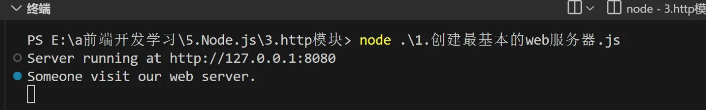
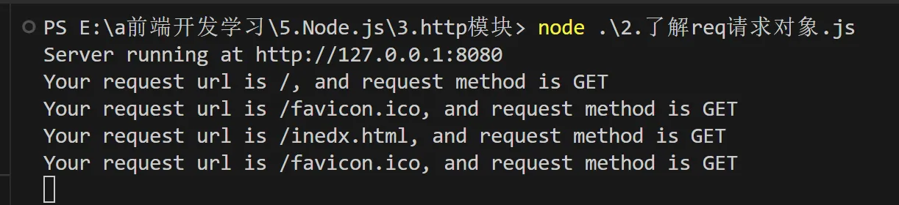

Express(一)学习前课—HTTP
最近在学习 node.js，学到了 Express，直到我们可以利用 Express 自己搭建服务器，那么在正式学习 Express 之前，我们先学习一下 node 内置的 HTTP，它也可以搭建服务器，实现前后端交互。
1.认识 HTTP
回顾:什么是客户端、什么是服务器?
- 在网络节点中，负责消费资源的电脑，叫做客户端;
- 负责对外提供网络资源的电脑，叫做服务器。
http模块是Nodejs 官方提供的、用来创建web服务器的模块。通过 http模块提供的 **http.createServer()**方法，就能方便的把一台普通的电脑，变成一台Web 服务器，从而对外提供 Web资源服务。
服务器和普通电脑的区别在于，服务器上安装了web服务器软件，例如:lIS、Apache等。通过安装这些服务器软件，就能把一台普通的电脑变成一台web 服务器。
在Nodejs 中，我们不需要使用IIS、Apache等这些第三方web服务器软件。因为我们可以基于Node.js提供的http模块，通过几行简单的代码，就能轻松的手写一个服务器软件，从而对外提供web服务。
在了解 http 时，我们还需要知道 IP，域名，端口的概念，这对我们至关重要。
1.IP地址
IP地址就是互联网上每台计算机的唯一地址，因此IP地址具有唯一性（但是 IP 地址是可以更改的）。如果把“个人电脑”比作“一台电话”，那么“IP地址”就相当于“电话号码”，只有在知道对方IP地址的前提下，才能与对应的电脑之间进行数据通信。
IP地址的格式:通常用“点分十进制”表示成(a.b.c.d)的形式，其中,a,b,c,d都是0~255之间的十进制整数。例如:用点分十进表示的IP地址(192.168.1.1)
注意:
- 互联网中每台Web服务器，都有自己的IP地址，例如:大家可以在Windows 的终端中运行ping www.baidu.com命令，即可查看到百度服务器的IP地址。
- 在开发期间，自己的电脑既是一台服务器，也是一个客户端，为了方便测试，可以在自己的浏览器中输入127.0.0.1这个IP地址，就能把自己的电脑当做一台服务器进行访问了。
2.域名和域名服务器
尽管IР地址能够唯一地标记网络上的计算机，但IP地址是一长串数字，不直观，而且不便于记忆，于是人们又发明了另一套字符型的地址方案，即所谓的域名(Domain Name)地址。
IP地址和域名是——对应的关系，这份对应关系存放在一种叫做域名服务器(DNS，Domain name server)的电脑中。使用者只需通过好记的域名访问对应的服务器即可，对应的转换工作由域名服务器实现。因此，域名服务器就是提供IP地址和域名之间的转换服务的服务器。
注意:
- 单纯使用IP地址，互联网中的电脑也能够正常工作。但是有了域名的加持，能让互联网的世界变得更加方便。
- 在开发测试期间，127.0.0.1对应的域名是localhost，它们都代表我们自己的这台电脑，在使用效果上没有任何区别。
3.端口号
计算机中的端口号，就好像是现实生活中的门牌号一样。通过门牌号，外卖小哥可以在整栋大楼众多的房间中，准确把外卖送到你的手中。
同样的道理，在一台电脑中，可以运行成百上千个web服务。每个web服务都对应一个唯一的端口号。客户端发送过来的网络请求，通过端口号，可以被准确地交给对应的web服务进行处理。
注意:
2.创建一个最基本的服务器
步骤：
- 导入 http模块
- 创建web 服务器实例
- 为服务器实例绑定request事件
- 监听客户端的请求启动服务器以上我们就创建了一个最基本的服务器并启动它。
1
2
3
4
5
6
7
8
9
10
11
12
13
14
15
16// 1.导入http模块
const http = require('http')
//2.创建web服务器实例
const server = http.createServer()
//3.为服务器绑定request案例，监听客户端的请求
// req是请求对象，res是响应对象
server.on('request', function(req, res){
console.log('Someone visit our web server.');
})
//4.启动服务器，端口号为8080
server.listen(8080, function(){
console.log('Server running at http://127.0.0.1:8080');
})

3.req 与 res
刚才我们讲到 req 是请求对象，res 是响应对象。只要服务器接收到了客户端的请求，就会调用通过server.on()为服务器绑定的request事件处理函数。我们通过一个小例子来了解：
1 | |
req 是请求对象，我们就可以通过 req.url 和 req.method 获得请求的 url 地址和 请求方法；res 是响应对象，res.end()是一个响应方法，可以向客户端响应一些内容,结束这次请求过程。

如果我们向 res.end()中发送中文的话，可能会出现乱码，我们需要手动设置编码格式：
1 | |
4.根据不同的 url 响应不同的内容
有时我们需要通过不同的 url 来返回不同的 html 内容，可以通过下面的方法：
- 获取请求的url地址
- 设置默认的响应内容为404 Not found
- 判断用户请求的是否为/或/index.html首页
- 判断用户请求的是否为/about.html关于页面
- 设置Content-Type响应头，防止中文乱码使用res.end(）把内容响应给客户端以上我们就基本学会了如何使用 http 搭建简单的服务器，下一节我们就正式进入 Express 的学习了，并会了解到使用 Express 搭建服务器比原生 http 的优点，敬请期待吧。
1
2
3
4
5
6
7
8
9
10
11
12
13
14
15
16
17
18
19
20
21
22const http = require('http')
const server = http.createServer()
server.on('request', (req, res) => {
//1.获取请求的url地址
const url = req.url
//2.设置默认的响应内容为 404
let content = '<h1>404 Not Found</h1>'
if (url === '/' || url === '/index.html') {
content = '<h1>首页</h1>'
}
else if (url === '/about.html') {
content = '<h1>关于页面</h1>'
}
res.setHeader('Content-type', 'text/html; charset=utf-8')
res.end(content)
})
server.listen(8080, () => {
console.log('Server running at http://127.0.0.1:8080');
})